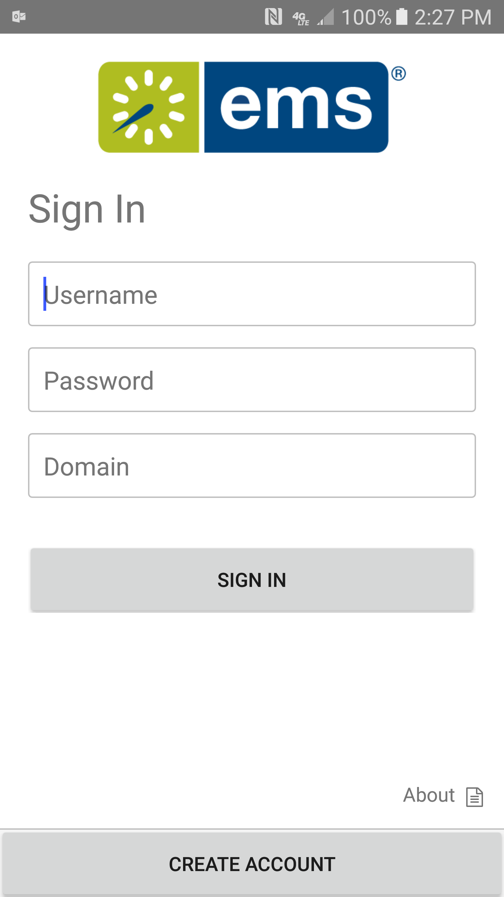
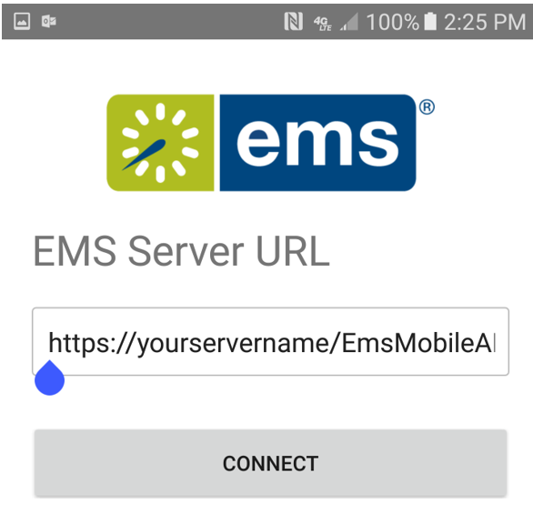
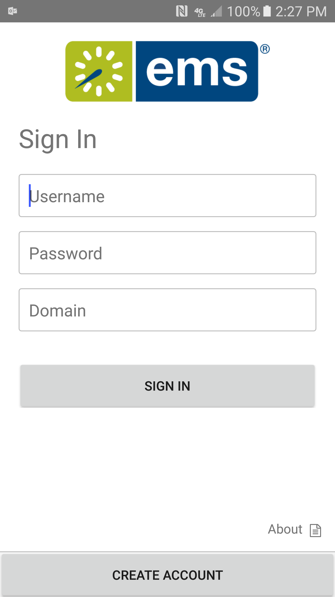
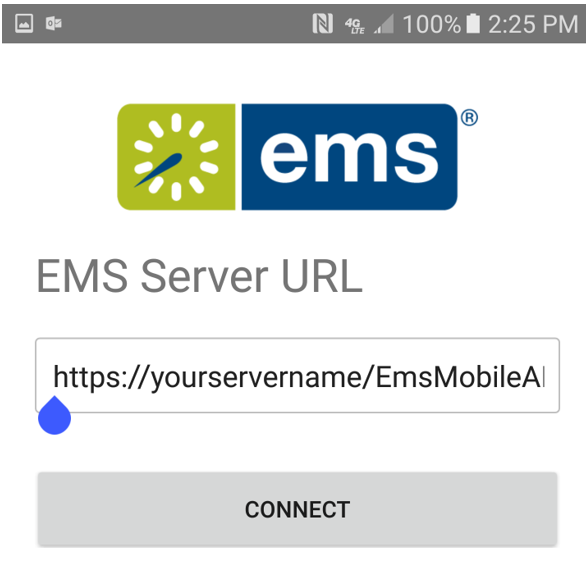

There are two ways to deploy the EMS Mobile App App for your users:
Warning: It is important to understand the compatibility between the EMS Mobile App and EMS Platform Services. The EMS Mobile App needs to be on the same version or higher as EMS Platform Services. For example, the EMS Mobile App Update 20 version will be compatible with EMS Platform Services Update 19 or older. However, compatibility issues will exist if you try to install EMS Platform Services Update 20 with an older version of the EMS Mobile App (Update 19 or older).
To deploy via the public app store, direct your users to go to the Google Play and Apple app stores on their mobile devices. They will be able to download the app by clicking on the link. However, they will have to manually input the EMS Mobile API URL. They will receive a prompt to do so the first time they open the EMS Mobile App.
If users need to change the API URL at a later date, they can:


While this approach may be easier for your IT staff, it has definite costs:
To deploy via a private enterprise app store, first download the unsigned apk/ipa files from your EMS Customer Portal. You then have to resign the app and deploy it via your MDM system. This site offers some guidance on how to sign an unsigned ipa file (i.e. for iOS), while this site does the same for Android apk files. Deploying via a private app store allows you to control which version of the Mobile App your users have.
As an example, here are the key steps to resign and deploy the unsigned EMS Mobile App ipa file (following instructions provided here):